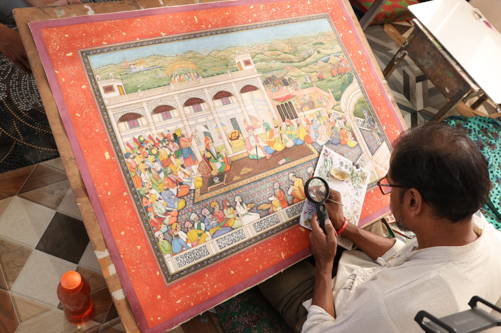
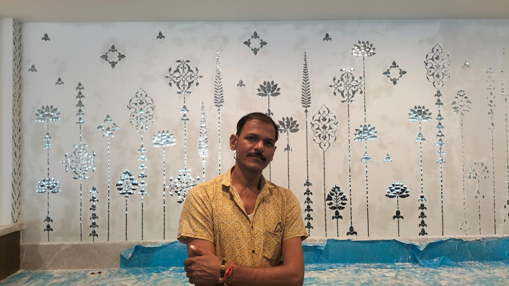
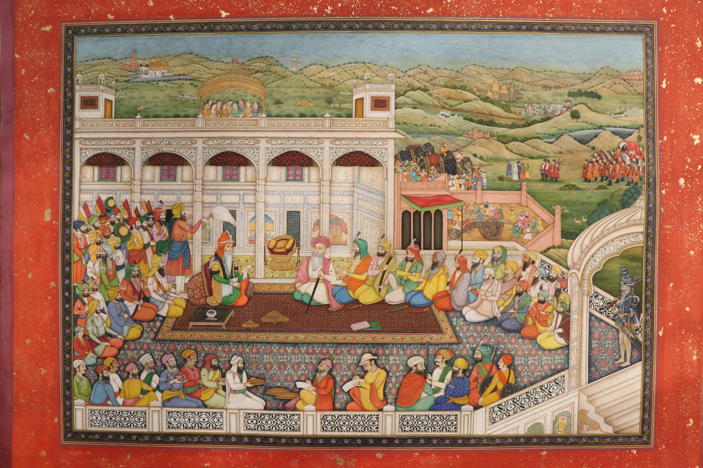
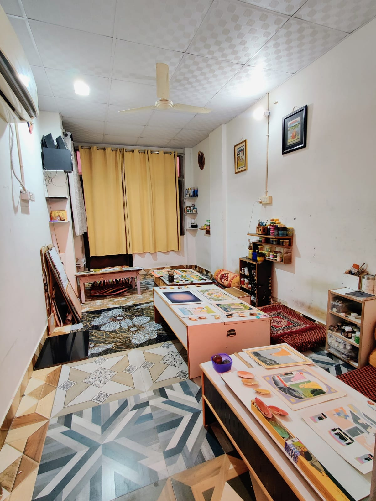
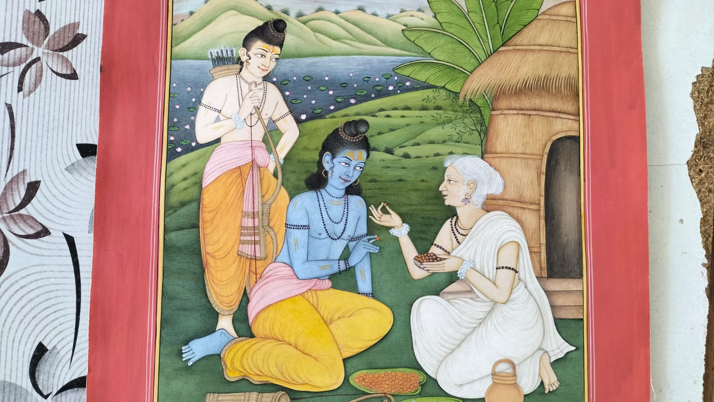
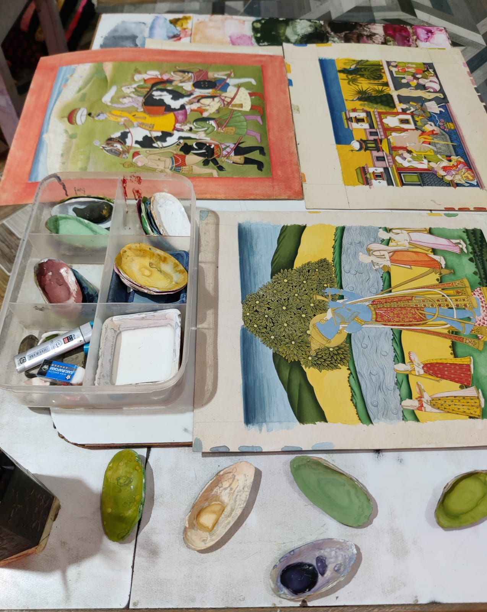

Where Centuries of Royal Lineage Breathe Upon a Single Hair.
"Eyes and complete devotion must be surrendered—only then is a miniature truly born."
Born in 1986 in the historic village of Boraj near Jaipur, Om Prakash Kumawat has spent more than twenty-six years in quiet, transcendent dialogue with India’s greatest artistic traditions. With mineral stones ground by hand in sea shells, pure twenty-four-karat gold leaf, and single-hair squirrel brushes, he resurrects the sacred intimacy of India’s royal miniature ateliers for the modern world.
Bhavan • PMO
Showcased

The Roots of Boraj & The Guru-Shishya Parampara
True miniature mastery cannot be acquired from textbooks; it is an inheritance transferred through silence, observation, and relentless discipline beneath the watchful gaze of a master. Om Prakash’s path began under humble skies in Boraj, a village nestled on the fringes of Jaipur. As a young boy selling lassi to help sustain his family, fate intervened on his visits to the walled Pink City, where he witnessed an elder relative painting miniatures. In that moment of revelation, an innate artistic fire took hold.
Recognizing that miniature art is not merely an aesthetic pursuit but a spiritual tapasya (devotion), he surrendered himself completely to the sacred Guru-Shishya tradition of Jaipur. Over decades of patient surrender, he trained under the legendary Jaipur masters:
-
Shri Rajesh Ji
Imparted the ancient geometry of courtly composition and the exacting science of facial contouring (*chinnha-vidya*).
-
Shri Rajendra Gaid Ji
Unveiled the confidential secrets of natural pigment extraction, stone levigation, and the mystical application of Hilkari gold.
-
Shri R.K. Sharma Ji
Instilled the classical philosophy, emotional depth (*bhava*), and botanical precision that define royal Mewar and Kangra miniatures.

"A small miniature takes months, but preparing the colors takes longer still. It demands one hundred percent surrender. A queen's nose-ring, her tresses, the devotion in her eyes—you do not paint them through glass; you hold your breath and steady your gaze until the universe appears without a single flaw."— Om Prakash Kumawat (Dainik Bhaskar Feature)
The Nine Classical Schools of Miniature Art
While most contemporary painters remain tethered to a single provincial style, Master Om Prakash Kumawat is revered across India for having mastered the distinct idioms, color palettes, and royal iconography of nine classical schools:
Mewar
Characterized by intense emotional vigor, deep lac-red borders, and vivid devotional depictions from the Rasikapriya and Bhagavat Purana.
Mughal
Celebrated for photographic naturalism, intricate court durbars, botanical margins (*hashiya*), and delicate psychological portraiture.
Kangra (Pahari)
The pinnacle of lyricism; undulating Himalayan hills, rhythmic verdant landscapes, and the eternal, tender romance of Radha and Krishna.
Kota-Bundi
Dramatic movement, turbulent monsoon skies, dense jungle hunts (*shikar*), and luxuriant architectural pavilions draped in gold.
Bikaner
Refined delicacy influenced by Persian Usta artisans; gossamer draperies, ethereal cloud-bands, and soft, understated mineral harmonies.
Punjab & Sikh Court
Regal historical narratives depicting Maharaja Ranjit Singh, martial grandeur, ornate armaments, and the sacred ethos of the Khalsa.
Deccan
Mystical, sensuous compositions distinguished by luminous turquoise, opulent heavy gold, and rich Sultanate Persian motifs.
Jaipur (Dhundhar)
The artist's home school; stately marble architecture, jeweled court gatherings, and pure symmetrical elegance adorned in Hilkari.
Alwar
A delicate bridge between Jaipur courtliness and Mughal finesse, renowned for shaded modeling and exquisitely ornate turbans.
The Sacred Alchemy: From Earth to Eternity
In an era of synthetic acrylics and mass reproduction, Master Om Prakash Kumawat adheres unflinchingly to the orthodox techniques practiced in royal karkhanas six centuries ago.
Handmade Wasli Paper
Multiple layers of unbleached handmade sunn-hemp and cotton rag paper are fused together using a cooked copper-sulfate wheat starch paste to prevent insect infestation. The surface is then hand-burnished for days using an agate stone (*gholta*) until it acquires a porcelain-like ivory sheen.
100% Mineral Pigments
Raw minerals extracted from the earth—lapis lazuli for royal blues, malachite for deep jade greens, cinnabar (hinglu) for glowing vermilion, orpiment (hartal) for gold yellows, and riverbed white zinc—are ground with mortar and pestle, levigated in water, and preserved in natural clam and conch shells.
Single-Hair Squirrel Brushes
No manufactured brush can produce lines with zero tolerance for error. The artist hand-crafts his own brushes (*kalam*) using fine, non-shedding hairs harvested ethically from the tails of desert squirrels, bound inside bird quills, tapering to a single micro-point finer than human hair.
24K Hilkari Gold Detailing
Pure twenty-four-karat gold leaf is hand-rubbed with purified gum arabic and honey for days until it dissolves into an impalpable liquid gold powder (*Hilkari*). Applied to royal armor, jewelry, and halos, it is burnished with a heated agate needle to achieve a celestial, three-dimensional gleam.

Enshrined in India’s Highest Corridors of Power
Om Prakash Kumawat’s works have transcended private gallery walls to occupy pride of place within India’s national patrimony. His miniatures grace state collections where heads of state and global dignitaries encounter the finest artistic expressions of the Indian subcontinent.
Rashtrapati Bhavan (Presidential Palace, New Delhi)
Permanent installation of classical Rajasthani miniature narratives within India’s supreme sovereign residence.
Prime Minister’s Office (PMO, New Delhi)
Specially selected works representing India’s cultural heritage and living master traditions presented to foreign dignitaries.
Delhi Vidhan Sabha & Virasat-e-Khalsa
Monumental historical commissions honoring Sikh history, Punjab court narratives, and constitutional heritage.
"The Breath of Lineage" Exhibition
Featured in the landmark museum exhibition curated by Padma Shri Vijay Sharma, celebrating India’s most authentic living miniature lineages.
Keeping the Flame Alive: Mentorship & Education
For Master Om Prakash, mastery is not a solitary pinnacle—it is a responsibility to future centuries. As commercial shortcuts threaten to extinguish the painstaking knowledge of stone grinding and single-hair brushwork, he has dedicated himself to training the next generation of classical artists.
Alongside his daughter and protégé, talented artist Priyanka Kumawat, he co-founded odsoma.llp and leads international masterclasses and intensive experiential workshops. Here, art students, scholars, and serious collectors are initiated into the meditative stillness of Wasli burnishing and mineral alchemy.
Atelier Apprenticeships
Immersive, one-on-one traditional training in Jaipur, preserving the unbroken oral and technical lineage of Guru-Shishya.
Masterclasses & Experiential Guilds
Comprehensive institutional workshops across premier art foundations, such as the AIM Gallery "Indian Miniature School of Art Experiential".
Ethical Documentation
Archiving ancient recipes for organic binding media, gum arabic purification, and stone levigation for posterity.



Enter the Sanctuary of Timeless Art
Whether you are seeking to commission a museum-grade heirloom, acquire a curated miniature for a private collection, or enroll in an exclusive masterclass, we invite you to begin your journey into India's living royal heritage.